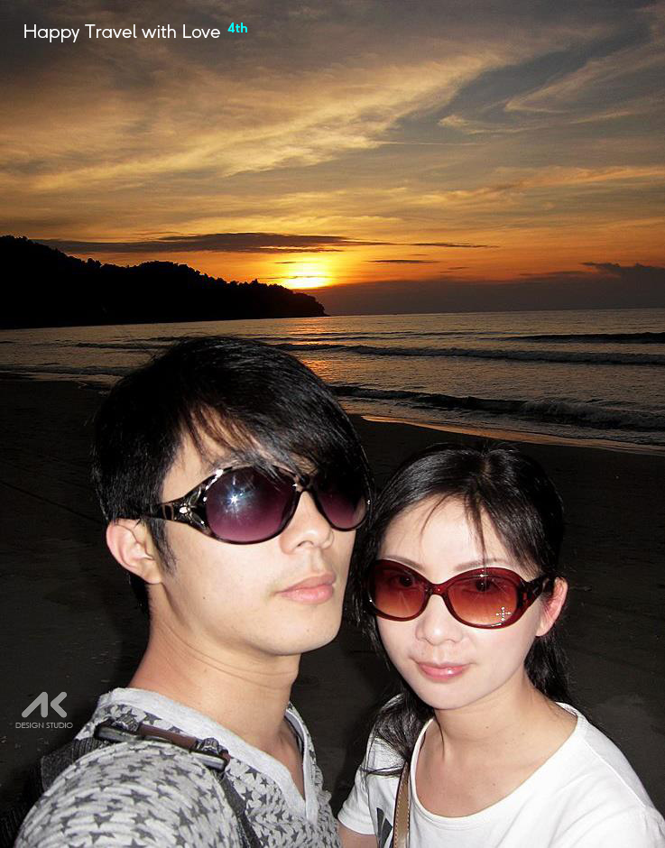
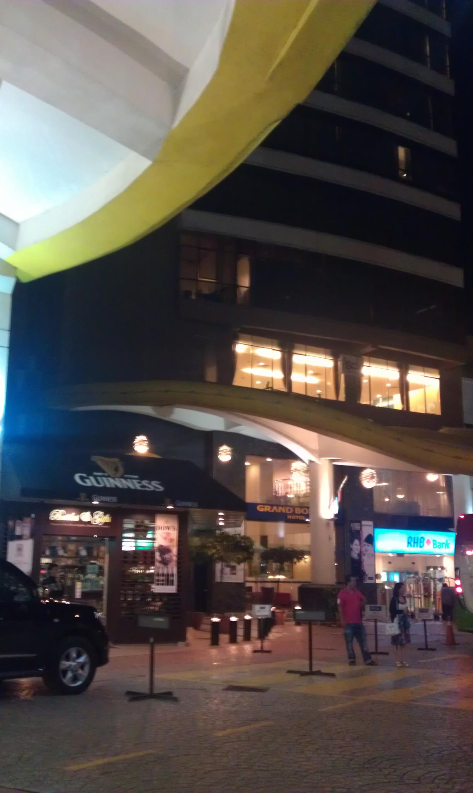
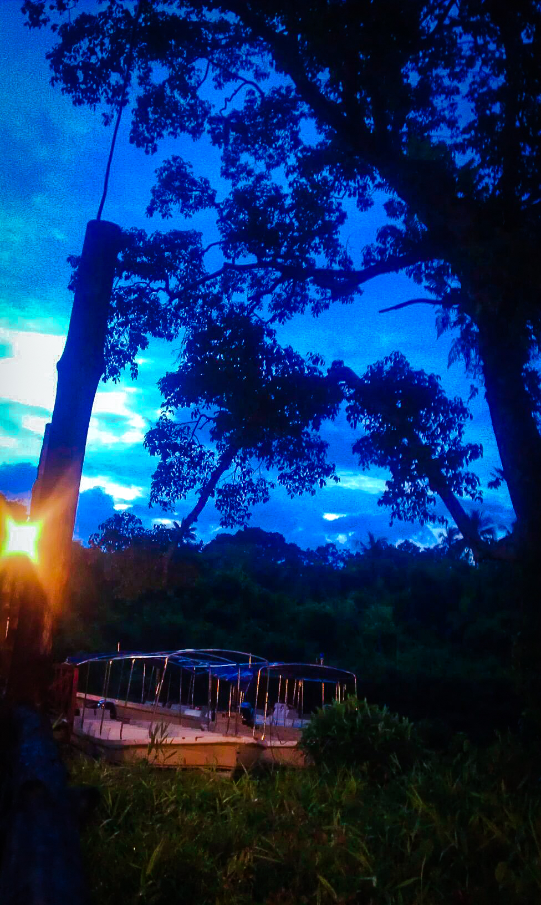
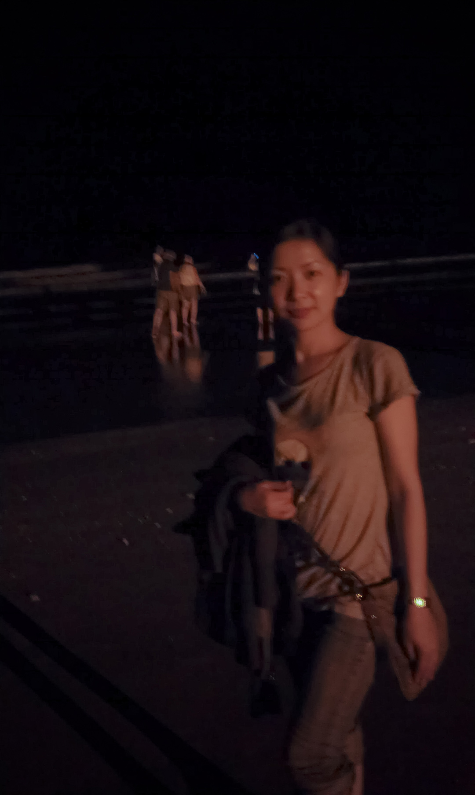
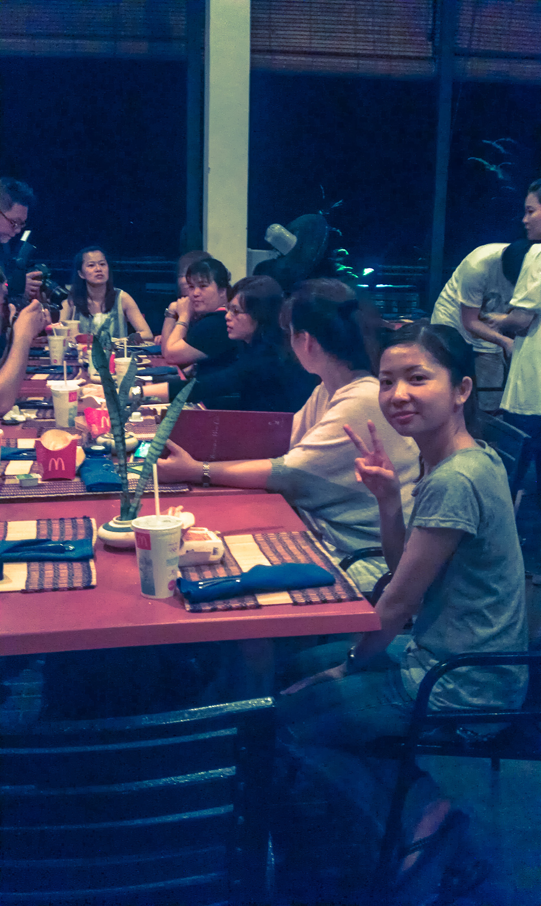
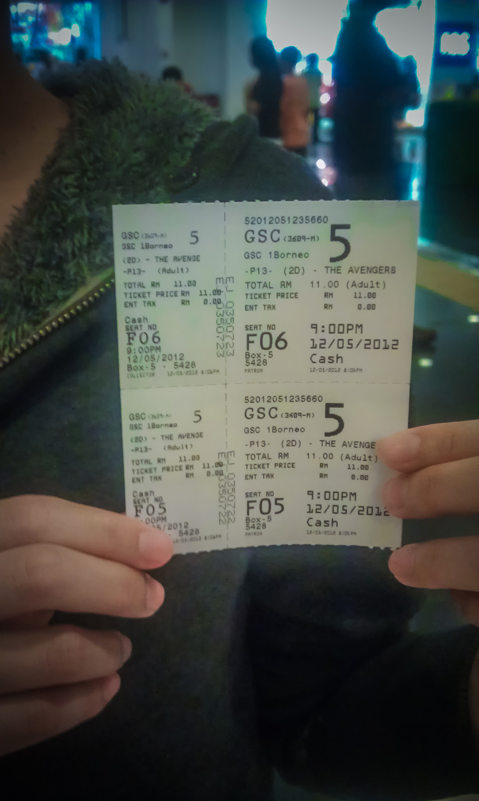
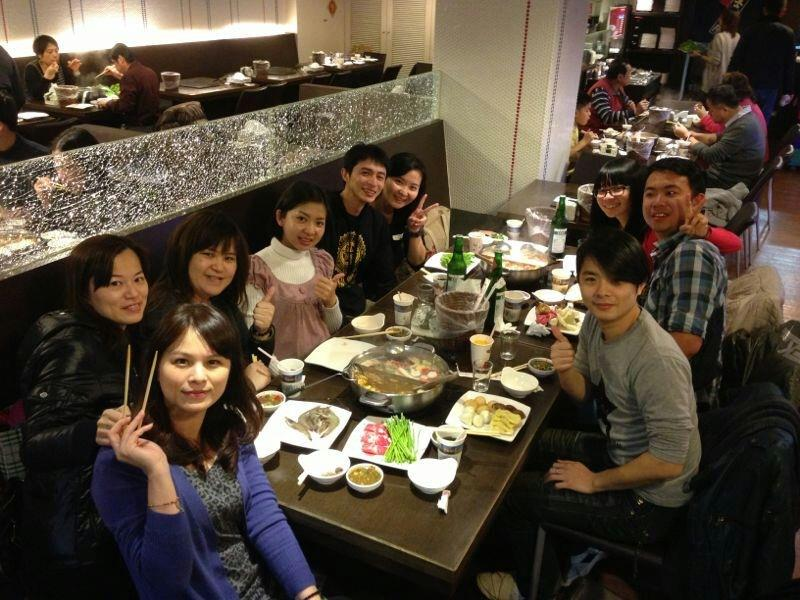
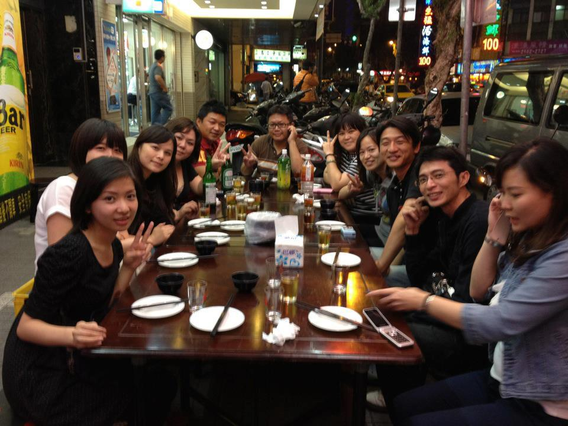

- 
風下之鄉－沙巴
和小妹在挑行程時，突然看到一個陌生的名字－沙巴。
翻開行程表一看，有刺激的泛舟、獨特的大自然生態螢河，
還有從沒見過的長鼻猴！
再看到那親民的團費，心裡瞬間就決定~就是你了，皮卡猴 XDD。
白天在山川裡探險，夜晚則在河畔靜靜看著滿天螢火，
還有熱鬧的夜市美食一口接一口，沙巴帶來的驚喜遠超想像。
第一次來這裡，就愛上這份原始與熱情並存的魅力。
# 夜市美食好好吃
# 景點的照片似乎被某人誤刪了orz

FB 撰寫日期:2012.05.12
在晶亮吊飾下歇腳，等候辦理入住~
有人一開始因為不會關漫遊說渡假不要上網...(我幫她解決後，瞧她開心的表情)# 馬來西亞·沙巴·亞庇·Grand Borneo Hotel 大廳
- 
夜幕亮起的旅館外觀。
# 馬來西亞·沙巴·亞庇·Grand Borneo Hotel 外觀
- 
暮色藍到發亮，紅樹林邊的碼頭正要啟程。
# 馬來西亞·沙巴·Klias 河濕地·螢火蟲遊船
- 
海浪拍黑夜，腳印悄悄寫下心事。
# 馬來西亞·沙巴·亞庇·丹絨亞路 夜訪
- 
一群人面對海風慢慢吃，節奏剛剛好。
# 馬來西亞·沙巴·海邊餐廳·同桌晚餐
-
火把映路，走進原民聚落的夜裡。
# 馬來西亞·沙巴·Mari Mari 文化村
- 
小確幸行程外：看《復仇者聯盟》！
# 馬來西亞·沙巴·亞庇·1Borneo·GSC 電影院
# 票價台幣$110
-

櫃台前打卡，晚場準備入場。
# 馬來西亞·沙巴·GSC 1Borneo 電影院
-
商場夜遊，藍光把臉龐點亮。
# 馬來西亞·沙巴·亞庇·購物中心
-
FB 撰寫日期:2012.05.12
精品飯店，逛到腳酸...等一下要看復仇 者聯盟，110塊台幣^^
# Grand Borneo Hotel
-
FB 撰寫日期:2012.05.13
享受沙巴森林的原始與遊河的刺激!
- 
FB 撰寫日期:2013.03.05
沙巴團導遊小陳來嚐嚐麻辣鍋的厲害，聊的超開心的啦！（天辣麻辣鍋）
- 
團友再相聚
# 20121010